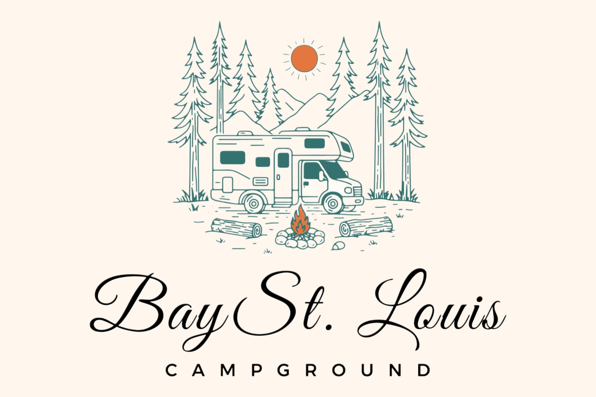
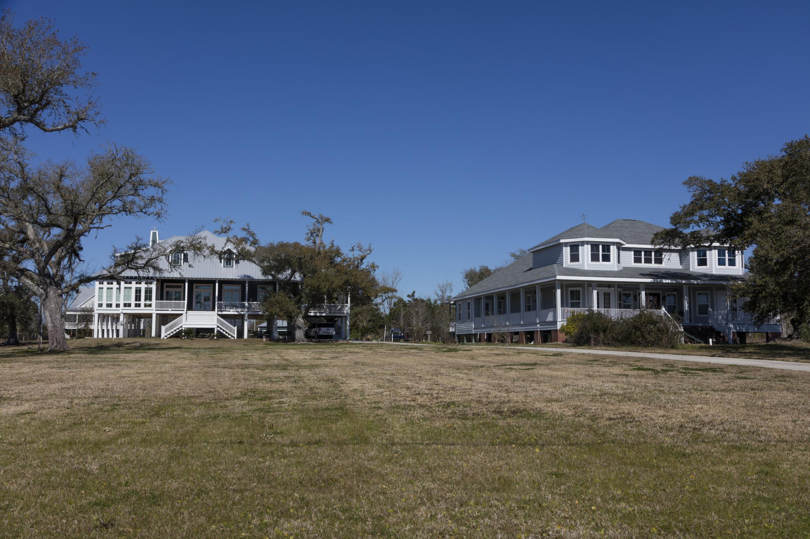

01
Close to everything
Reach Bay St. Louis beach, downtown restaurants, casinos, and day trips to New Orleans without giving up the laid-back campground feel.

Mississippi Gulf Coast Camping
Bay St. Louis Campground brings together full-hookup RV sites, cozy cabins, and family-friendly amenities in one calm coastal basecamp just off Highway 90.
01
Reach Bay St. Louis beach, downtown restaurants, casinos, and day trips to New Orleans without giving up the laid-back campground feel.
02
Cabins, a playground, a pool, and a catch-and-release pond make it easy to settle in for a long weekend or a longer stay.
03
Full hookups, on-site laundry, and approachable daily pricing keep the experience relaxed and low-fuss.
Stay Your Way
Short stays are easy to book, and long-term RV stays are available too. Call for monthly rates and current availability.
Most Popular
$60/day
Spacious full-hookup site with 50 amp service for easy coastal stays near town.
$55/day
Full hookups included, with convenient access to beach days, downtown Bay St. Louis, and the campground amenities.
Call for availability
Family-friendly cabin stays for guests who want the campground atmosphere without bringing the RV along.
Long-Term Option
Call for rates
Planning a longer Gulf Coast stay? Call for long-term rates, site availability, and the best fit for your rig.
Amenities
Water, sewer, electricity, and Wi-Fi are built into every rate.
Cool off after the beach or give the kids a steady vacation favorite.
Enjoy a catch-and-release pond right on site for a quieter afternoon.
A simple family perk that gives little campers room to roam.
Practical amenities that make longer stays easier to manage.
Just 2 miles away, so guests can bring along the whole crew.
Explore The Area
Start the day with coffee in town, head to the beach, swing by local shops or casinos, and still be back at your site before sunset.
Open Nearby MapBeach
Only 2 miles from camp for quick morning walks and evening breezes.
Open beach directions
Beach photo by Carol M. Highsmith via Wikimedia Commons, public domain.
Downtown
Easy access to Bay St. Louis favorites without a long drive.
Open Old Town map
Downtown photo by Nolaresearcher via Wikimedia Commons, CC BY-SA 3.0
Day Trip
About 55 miles away when you want a bigger-city adventure.
Open Jackson Square map
Photo by Tom Hilton via Wikimedia Commons, CC BY 2.0
Attractions
Use the quick links below to punch out to nearby dining, bars, and local attractions in Bay St. Louis, Waveland, and Gulfport or Biloxi.
Walking Distance Pick
A strong go-to for Mexican food, drinks, and an easy night out. Avocado's is close enough to the campground for a quick walk.
Downtown Bay St. Louis
Downtown Bay St. Louis is an easy drive from camp and makes it simple to build a dinner, drinks, and live-music kind of night.
Open Downtown Dining MapSeafood
Downtown seafood and raw-bar option when you want a Bay St. Louis night out.
Open In MapsWaterfront
Laid-back waterfront food and drinks with a casual Bay St. Louis feel.
Open In MapsDinner
Solid choice when you want a more polished steak or oyster dinner downtown.
Open In MapsBeachfront
Restaurant and bar with coastal views when you want dinner close to the water.
Open In MapsHarbor
Harbor-area dining that fits well into a downtown walk or an evening loop.
Open In MapsNight Out
Good nearby stop for drinks, music, and a more lively downtown evening.
Open In MapsMonthly Attractions Calendar
The calendar defaults to the current month and refreshes from Coastal Mississippi, Shoofly Magazine, and the Hancock Chamber. Filter for Bay St. Louis, Waveland, or Gulfport or Biloxi.
Events in this calendar are generated from local community sources and can be refreshed automatically for GitHub Pages deployments.
Plan Your Stay
For availability, cabin questions, or monthly rates, contact the campground directly. This redesign keeps the call-to-book flow simple and front-and-center.